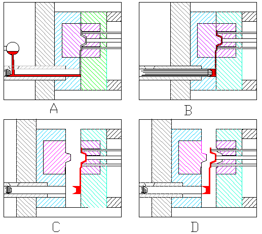

|
2-Soðuk
Kamaralý Döküm Yöntemi;
Soðuk
kamaralý döküm yönteminde ergime sýcaklýðý 665 °C olan alüminyum,
649 °C olan magnezyum, 1083 °C olan bakýr gibi ergime sýcaklýklarý
yüksek olan malzemelerin kalýplanmasýnda kullanýlmaktadýr.
Bu
presin en büyük avantajý eritilmiþ olan metalýn silindir-
piston ünitesini etkilememesidir. Çünkü metal ayrý bir fýrýn
içerisinde eritilerek kalýp içerisine basýlmaktadýr (6). Soðuk
kamaralý döküm makineleri, alýþma konumlarýna göre iki çeþittir.
a-)
Yatay soðuk kamaralý döküm makinesi;
Yatay
konumlu soðuk kamaralý makinelerda enjeksiyon sistemini oluþturan
silindir, piston ünitesi yatay düzleme paralel olarak yerleþtirilmiþtir
(Þekil 4). Silindir-piston ünitesi ýsýtýlmayan bu makinelerda
ergitilmiþ madenin enjeksiyon sistemini sýcaklýk etkisinden
korumak amacýyla silindir ve piston içerisine soðutucu kanallar
açýlmýþtýr. Kalýplama iþleminin ardýndan, açýlan kanallar
sayesinde silindir-piston ünitesi soðutularak özelliðinin
bozulmamasý saðlanýr. Bu preste ergitilmiþ metalin silindir
içerisine aktarýlýþýnda uygulanacak ilave ve besleme sisteminin
yerleþiminin zor olmasý, kalýplama zamanýnýn fazlalýðý, ýsý
kaybýný önlemek için madenin ergime sýcaklýðýndan fazla ýsýtýlmasý
gibi zararlý yönleri olmaktadýr (8).

Þekil 4. Yatay soðuk kamaralý makinenin çalýþmasýna örnek
(A;B;C;D)
A-Metalin
Doldurulmasý B-Metalin Basýlmasý C-Kalýbýn Açýlmasý D-Parçanýn
Çýkarýlmasý
b-)
Düþey soðuk kamaralý döküm makinesi;
Basma
iþlemi düþey bir kamarada yapýlmaktadýr, þekil 5.'deki gibi
alttaki piston ergimiþ metal kamaraya dolarken, kalýp giriþ
deliðini kapayacak konumdadýr. Metal beslendikten sonra üst
piston aþaðý doðru hareket ettirilerek, önce ergimiþ metal
iki piston arasýnda sýkýþtýrýlýr ve bu esnada alt piston üst
piston basýncýnýn etkisi ile aþaðý doðru hareket ederek kalýp
giriþ deliðini açar. Ergimiþ metal bu giriþten hýzla kalýp
boþluðuna basýlýr ve dökümün tamamlanmasý için bir süre basýnç
tatbik edilir. Katýlaþma bittikten sonra üst ve alt piston
yukarýya doðru hareket ettirilerek metal artýðý dýþarý atýlýr.
Kalýp yarýmý açýlarak parça çýkarýlýr. En önemli avantajlarý
piston hareket ettirildiðinde ergimiþ metal sýký bir kitle
halinde hareket ederek dökülen parçada hava boþluklarýnýn
oluþumu da minimum olur. Düþey makineler genellikle merkezden
beslemenin en iyi olduðu veya daha etkin olduðu durumlarda
tercih edilir. Örneðin; merkez kýsmýnýn et kalýnlýðý fazla
ve merkezden uzaklaþtýkça kenarlara doðru et kalýnlýklarý
azalan tekerlek v. b. parça dökümlerinde kullanýmý avantajlýdýr
(2).
Þekil 5. Düþey soðuk kamaralý döküm makinesi ve çalýþma sýrasýnýn
gösterilmesi
Basýnçlý
Döküm Kalýplarý
Kaliteli
bir üretim yapýlabilmesi için basýnçlý döküm parçalarýnýn
iyi bir konstrüksiyonu olmasý gerekmektedir. Konstrüksiyonun
yapýlmasýnda bazý noktalarýn üzerinde durulmasý gerekmektedir.
Bu önemli noktalarý þöyle sýralayabiliriz. Parçalarýn þekillendirilmiþ
kýsýmlarý mümkün olduðu kadar doðrusal olmalýdýr, Sivri uçlardan
kaçýnýlmalýdýr, 1, 5 mm den 4mm ye kadar ayný kalýnlýkta bir
cidar kalýnlýðý saðlanmalýdýr, Parçalarda lüzumlu koniklik
miktarý 1° den aþaðý olmamalýdýr, Muhtelif yerlere konacak
boþluk, delik ve cep gibi yerlere konacak maçalardaki koniklik
1, 5° 'nin altýnda olmamalýdýr, Parçada vida diþleri hususi
hallerde dökülür, gerekli diþlere ait maçalardan istifade
edilir, döküldükten sonra maçalar yerlerinden döndürülmek
suretiyle çýkarýlýr. Basýnçlý döküm parçalarýnýn konstrüksiyonlarýnda
en iyi tasarým elde edilinceye kadar gerekli çalýþmalar yapýlmalýdýr
(7).
Basýnçlý
Döküm Kalýplarý Konstrüksiyonu;
Basýnçlý
döküm kalýplarý, her biri dökülecek parçanýn geometrisine
göre iþlenmiþ iki kalýp yarýmýndan meydana gelir. Makineye
monte edilen bu kalýp bloklarýndan biri sabit (hareketsiz)
kalýp yarýmý, diðeri hareketli (enjektör) kalýp yarýmý olacak
þekilde düzenlenirler. Ergimiþ metal kalýp boþluðuna, sabit
kalýp yarýmýnda bulunan beslemem memesi vasýtasýyla akar.
Hareketli kalýp yarýmýnda ise dökülen parçanýn þekline baðlý
olacak yolluklar veya kanallar vardýr (2).
Diþi
kalýplar ve maçalar;
Diþi
kalýplar istenilen biçimde doðrudan doðruya kalýbýn ayýrma
çizgisinden itibaren itici kýsmýna ve sabit tarafýna iþlenir.
Diþi kalýplar ayný zamanda ayrý çelik bloklardan iþlenerek
kalýp takýmlarýnýn iki yarýsýndaki yuvalarýna yerleþtirilmek
suretiyle kullanýlýr. Kalýp takýmýna yerleþtirilen diþi kalýp,
kalýplanacak parçanýn biçimine göre yapýlýr. Kalýbýn iki parçasýnýn
üst yüzeyleri ayýrma çizgisinde birbirine oturur. Maçalar
iþ parçasý üzerindeki delik, oluk ve iç girintileri yapmak
için kullanýlýr. Bunlara örnek Þekil 6'da gösterilmiþtir.
Bazý maçalarýn amacý, parçanýn cidar kalýnlýklarýný eþit yapmak
ve metal tasarrufunu saðlamaktýr (8).
Þekil 6. Diþi ve maça yerleþimlerine örnekler
Ýticiler;
Basýnçlý
döküm kalýp konstrüksiyonun da en önemli öðelerden biri parçayý
kalýp içindeki þekillendikten sonra çýkarýlabilecek sistemin
ortaya konmasýdýr. Parçalarýn çýkarýlmasýnda genellikle itici
pimler kullanýlýr (Þekil 7). Ýtici pimlerin, ölçüleri, uygulamaya
göre 3 mm den 25 mm çapa kadar deðiþir. En çok kullanýlan
pim çaplarý 6-8 ve 10 mm dýr. Ýtici pimlerin yüzeyleri aþýnmaya
karþý çok sert nitrüre edilmiþtir (8).
Þekil 7. Ýtici pimlerin tipik konumlarý
Giriþler
ve daðýtýcýlar;
Daðýtýcýlar
yolluk burcundan giren ergiyik alaþýmýn, basýnçlý döküm kalýbýna
ayýrma yüzeyinden diþi kalýbýn içine dolmasýný saðlayan geçiþ
kanallarýdýr (Þekil 8). Basýnçlý döküm kalýplarýnda daðýtýcýlar
genellikle kalýp iticisi bulunan kýsma açýlýr. Derinlikleri
4, 5 mm den 8 mm ye kadar deðiþir. Geniþlikleri ise iþ parçasýnýn
aðýrlýðýna ve dýþ biçimine göre tayin edilirler. Basýnçlý
döküm kalýplarýnda giriþlerin yani daðýtýcý memelerinin geniþ
aralýklý tiplerinde ölçü 1, 25 mm üzerindedir. Ýnce aralýklar
ise 0, 625 mm civarýndadýr. Çok büyük parçalarýn meme aralýðý
2, 25 mm veya daha fazla aralýkla yapýlýr (Þekil 9). Ýnce
giriþlerle iyi yüzey kalitesi elde edilir, artýk kýsýmlarýn
ve yüzeyin düzeltilmesi kolay olur, fakat yoðun bir döküm
yapýlamaz. Büyük giriþlerle daha yoðun ve kusursuz bir döküm
yapýlýr. Fakat artýk kýsýmlarýn kýrýlmasý ve yüzeyin düzeltilmesi
daha güç olur. Giriþlerin büyüklüðü ve biçimi ergiyik alaþýmýn
buhar gibi püskürmeden bir akým saðlayacak þekilde olmalýdýr
(8).
Þekil 8. Çeþitli daðýtýcý þekil ve yerleþimleri
Þekil 9. Giriþ kanallarýnýn kalýp üzerindeki tipik konumlarý
|